I'm so happy to be a third year integrated resident at University Hospitals in Cleveland.
Even though residency is tough, there's always time to take a good photo!
Here are just a few of my favorite pictures from my residency so far!
Even though residency is tough, there's always time to take a good photo!
Here are just a few of my favorite pictures from my residency so far!
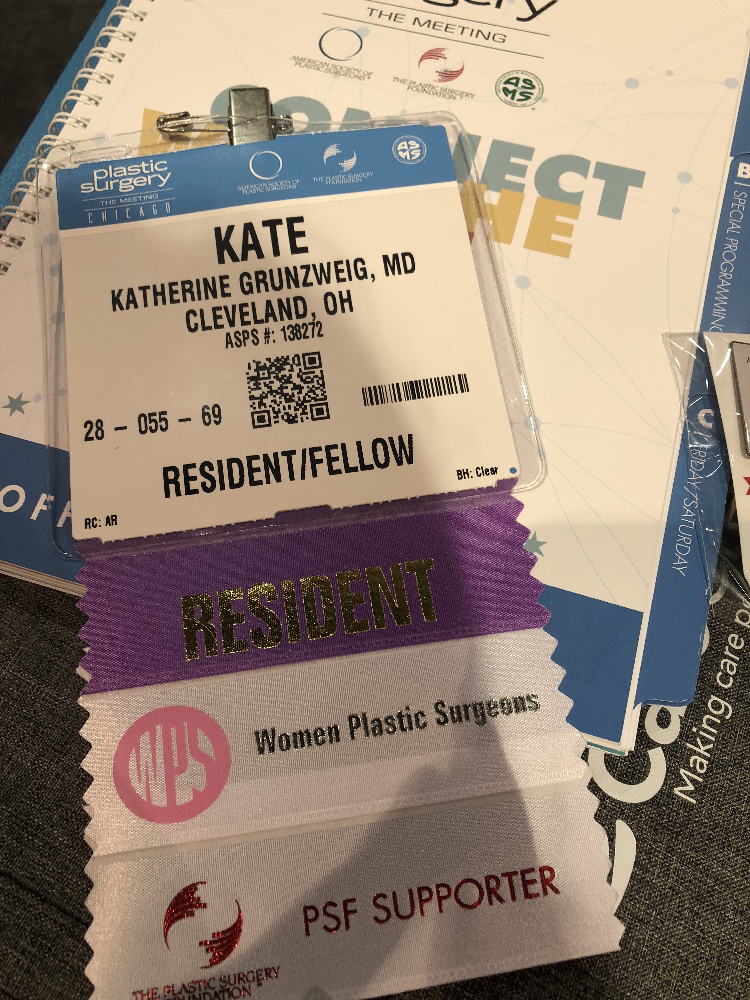
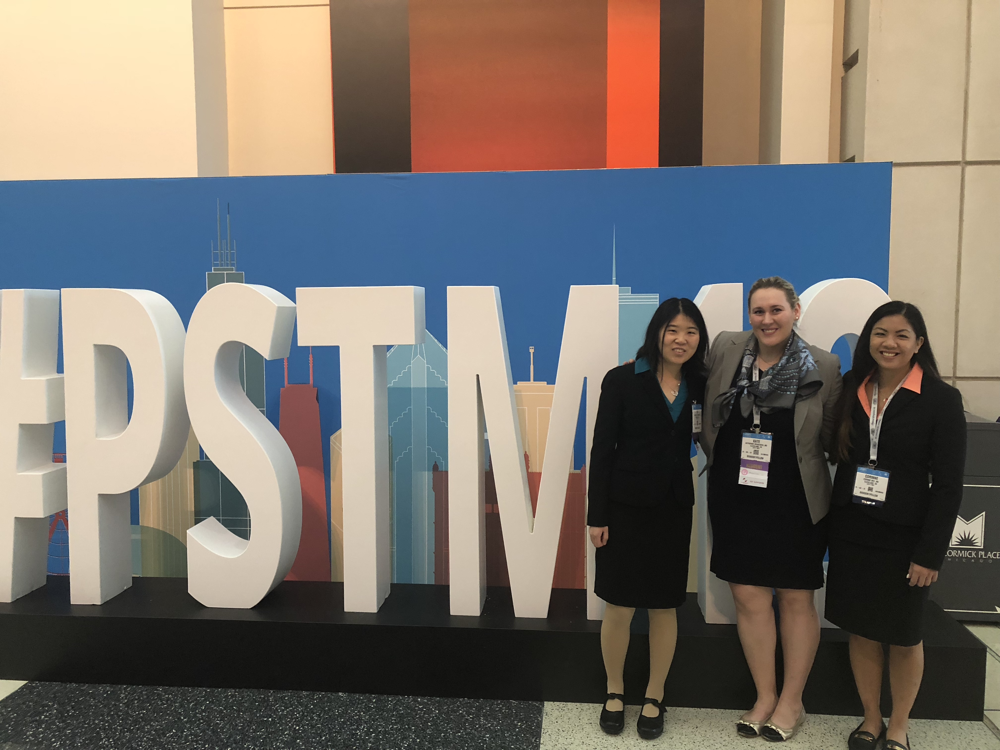
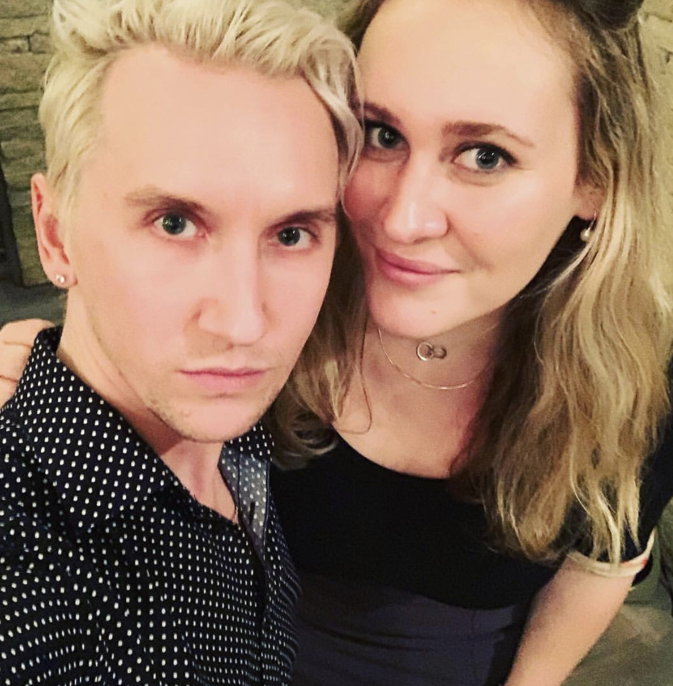
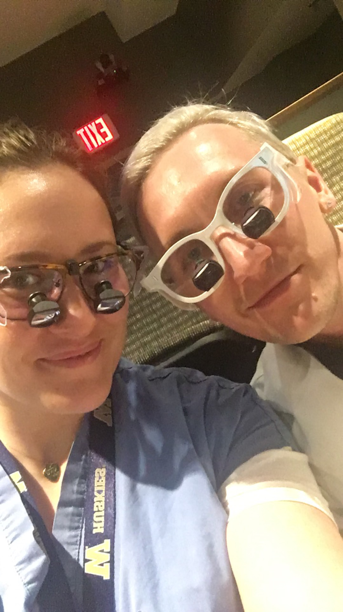
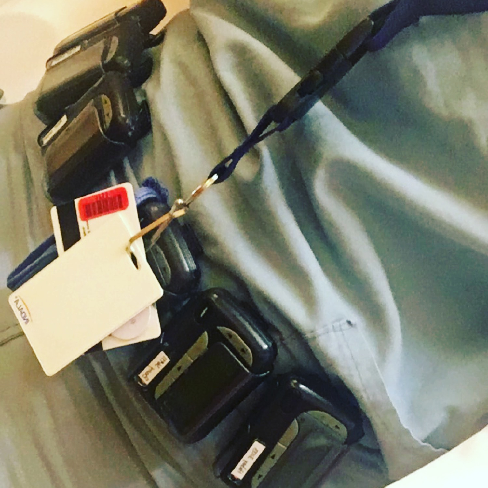
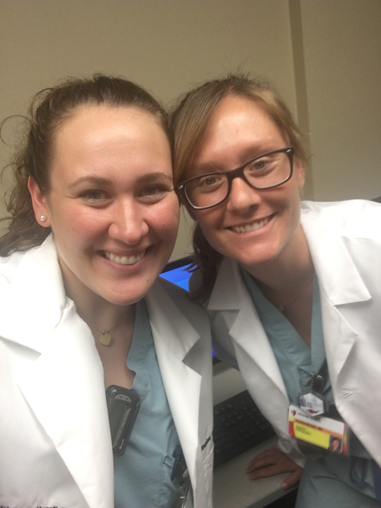
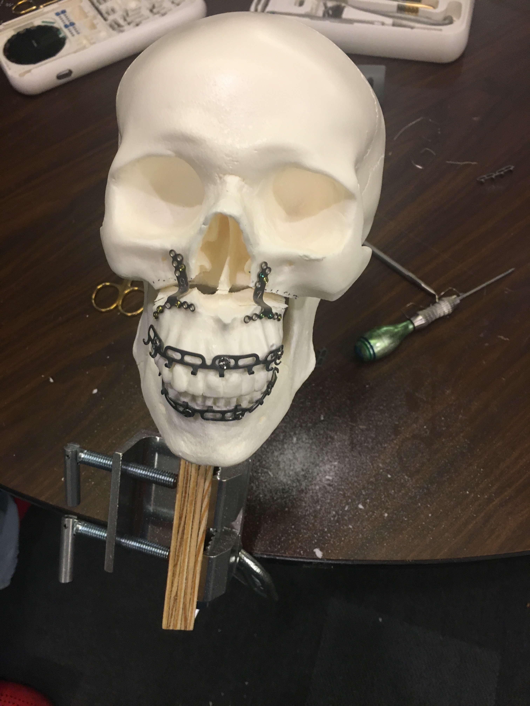
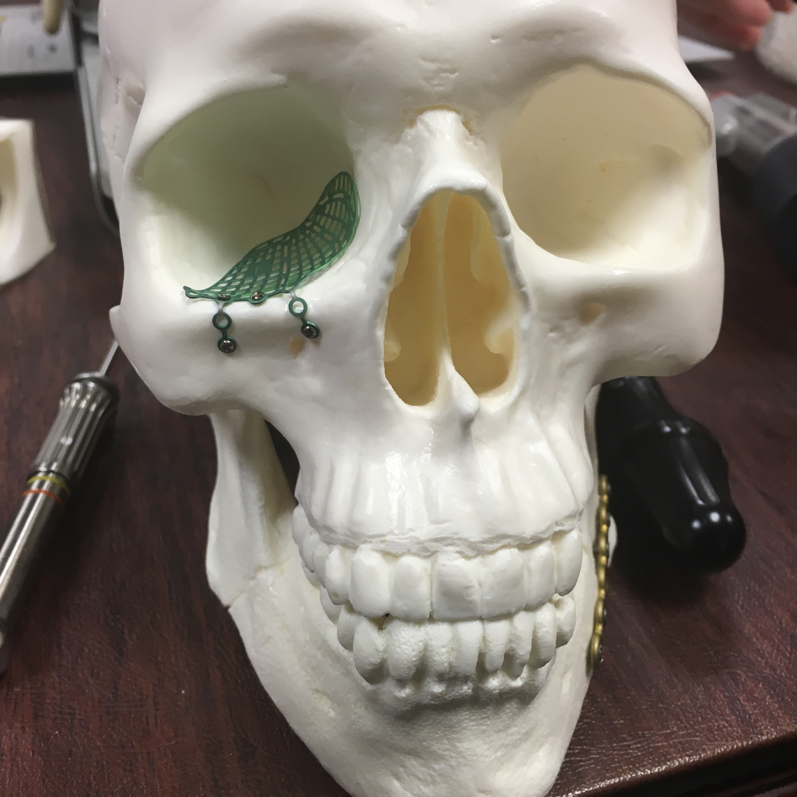
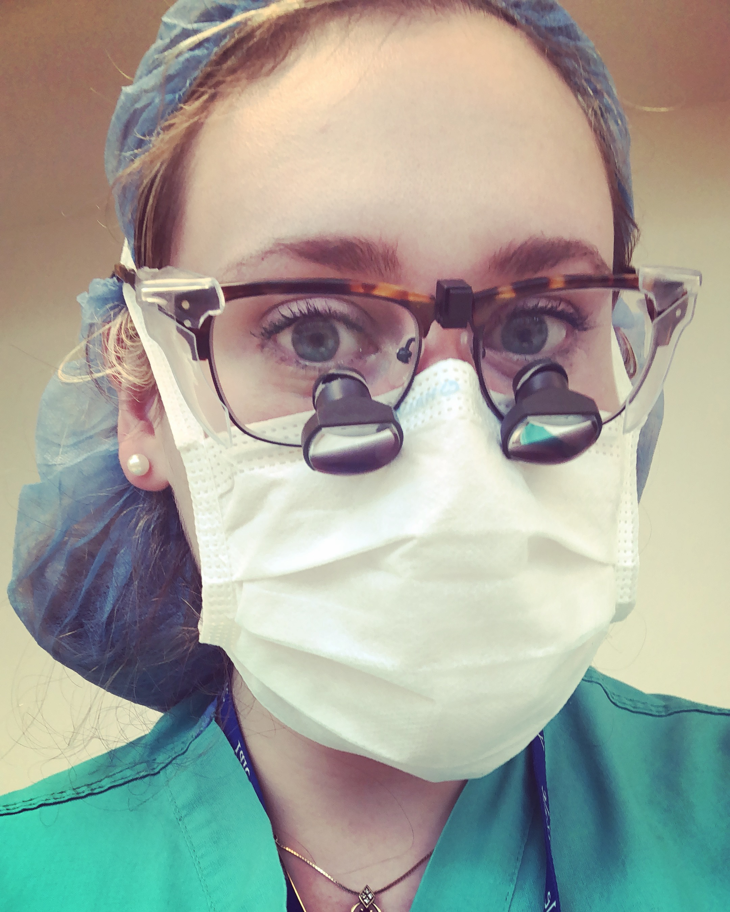
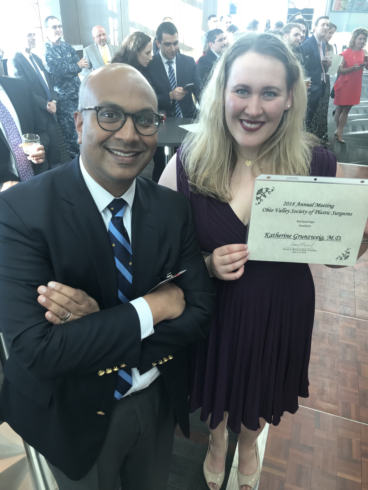
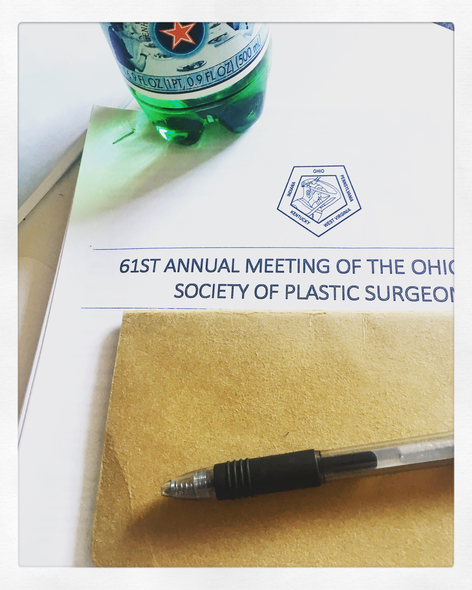
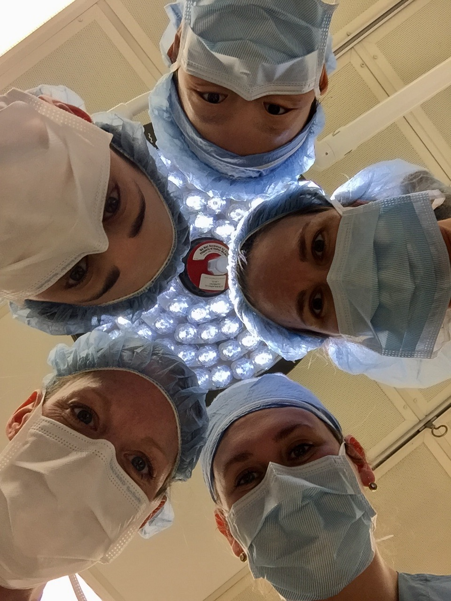